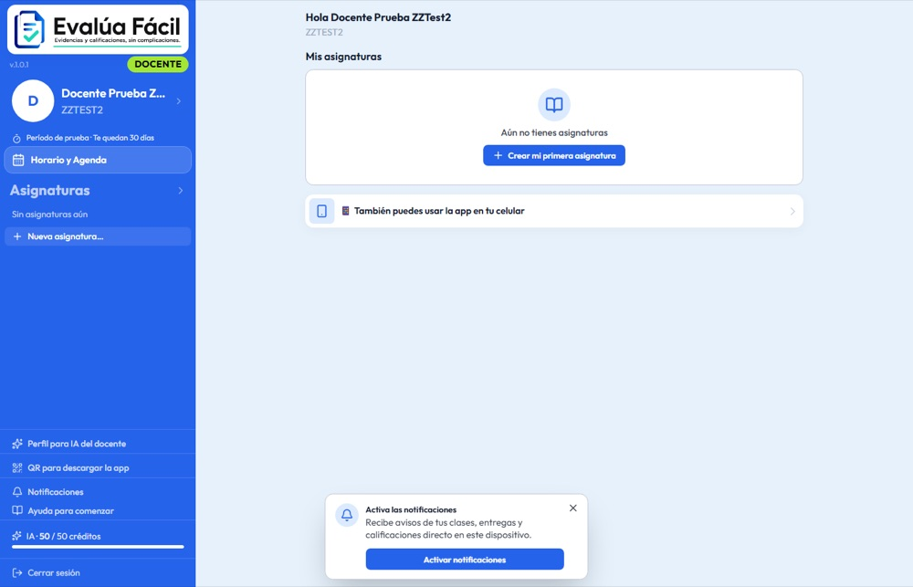

Caso de estudio · Educación
Evalúa Fácil
Docentes de bachillerato (DGETI / SEP) · 2026
En producción · producto propio
Alan Daniel Méndez JiménezSoftware a medida · Celaya, Gto.
+52 466 160 3682
alannicanor62@gmail.com
+52 466 160 3682
alannicanor62@gmail.com
Plataforma web + app Android para llevar calificaciones, asistencia y actas bajo la Nueva Escuela Mexicana, con IA para calificar y planear.

El problema
- Los docentes llevaban calificaciones, listas y actas en Excel y cuadernos; el sistema institucional es rígido y no ayuda en el día a día.
- Los alumnos de bachillerato muchas veces no tienen correo electrónico, así que las plataformas típicas no les sirven.
- Calificar entregables, redactar planeaciones y armar exámenes consume horas fuera del aula.
La solución
- Plataforma web (React + Firebase) y app Android con la misma cuenta. Los alumnos entran sin correo: usuario generado, QR o código de 6 caracteres.
- Alta masiva desde Excel, asistencia desde el celular generada del horario, cuestionarios y exámenes con gráficas por reactivo, banco de reactivos y rúbricas.
- IA con créditos prepagados: califica entregables con rúbrica, genera reactivos, planeaciones didácticas y diagnósticos de grupo.
- Cierre de parcial en una acción (reversible), copia de asignatura para el siguiente ciclo y exportación a Excel y PDF listos para entregar.
El resultado
- En producción con dominio propio (evaluafacil.mx) y app Android (APK firmado, v1.0.11) con la misma cuenta.
- Seguridad probada: reglas de Firestore con pruebas automáticas, calificaciones y créditos solo escribibles desde el servidor.
- Cierre de parcial y acta en minutos en lugar de tardes completas.
React 19ViteTailwindFirebaseCloud FunctionsCapacitor (Android)VercelClaude API